Об Ульяновске
Погода
Часовой пояс
Географическое положение
Известные люди
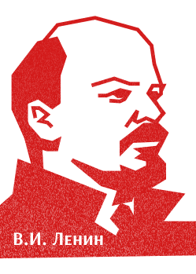
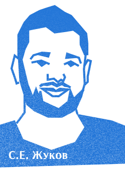
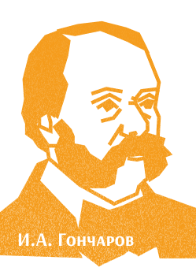
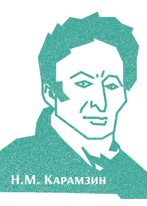
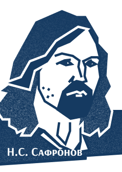
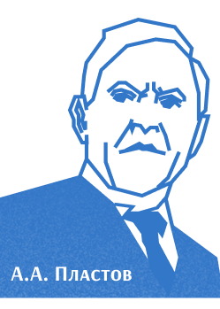
Владимир Ильич Ульянов (Ленин) (1870–1924) — революционер, основатель и первый руководитель Советского государства. Родился и провел юность в Симбирске. Его деятельность коренным образом изменила ход мировой истории XX века. В 1924 году город был переименован в Ульяновск в его честь.
Символы города
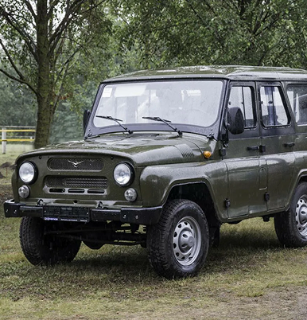
УАЗ
— легендарный внедорожник «буханка», рождённый в Ульяновске, покоряет планету своей неукротимой мощью вездеходов. Силуэт и протектор шин на знаке воплощают дух бездорожья и ульяновской стойкости.

Симбирцит
— янтарный кальцит 120 млн лет с аммонитами и ихтиозаврами, добытый в Ульяновской земле. Этот полудрагоценный камень 1985 года — ювелирный талисман Симбирска.
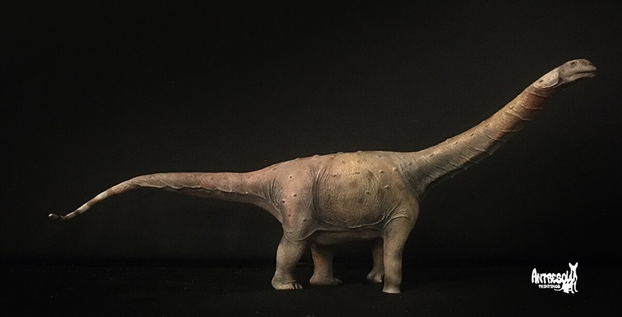
Родина динозавров
— Ундоровский музей на костях юрского периода, где Volgatitan simbirskiensis, 40-метровый гигант 130 млн лет назад, носит имя Волги и Симбирска. Здесь наука оживает среди окаменелостей весом 100 тонн.
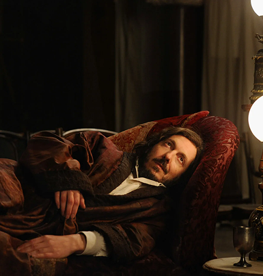
Обломов
— симбирский соня из романа Гончаровского, где город стал «громадной сонной деревней» с Обломовским фестивалем и диваном. Атмосфера Ульяновска вдохновила лень как искусство.
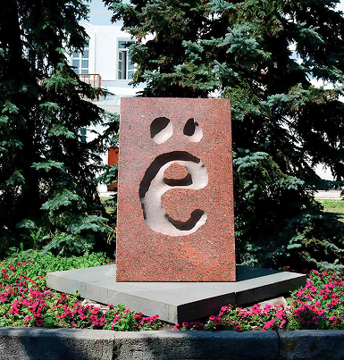
Родина «Ё»
— Симбирск подарил русский алфавит букве благодаря Карамзину, сменившему «io» на «ё» в стихах 1797 года. Эта искра гения навсегда оживила язык, и сегодня она сияет как гордость города.
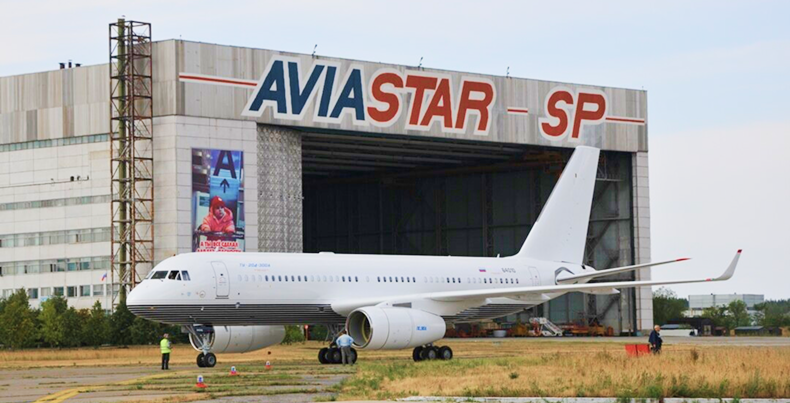
Родина самолётов
— «Авиастар» куёт Ил-76 и «Русланы», стратегические крылья России для неба и космоса. Ульяновск взлетает на рекордных грузах, обслуживая Ан-124 для глобальных миссий.